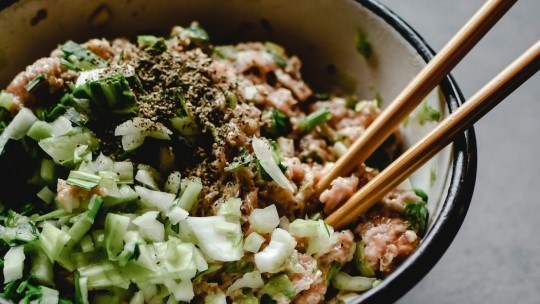

Carne Moída com Legumes

Ingredientes
- 1Kg de Carne moída
- 1/2 Pimentão
- 1 cebola
- 1/2 cenoura
- 1/2 tomate
- Cheiro-verde
- 3 dentes de alho
- 1 Pimenta dedo de moça ou pimenta de cheiro
- Pimenta do reino e sal a gosto
- Azeite
Modo de Preparo
- Em uma panela, refogue o alho e a cebola com azeite.
- Adicione a carne moída e tempere com sal e pimenta do reino.
- Quando a carne dourar, adicione cheiro-verde e a pimenta dedo de moça ou de cheiro. Adicione um pouco mais de alho e cebola também.
- Pique o pimentão e o tomate e rale a cenoura.
- Quando a carne tiver dourado mais e soltado mais gordura, adicione o pimentão, o tomate e a cenoura.
- Com todos os legumes adicionados, adicione mais um pouco de sal.
- Deixe cozinhar até os legumes ficarem cozidos e sirva.
Voltar para a lista de receitas